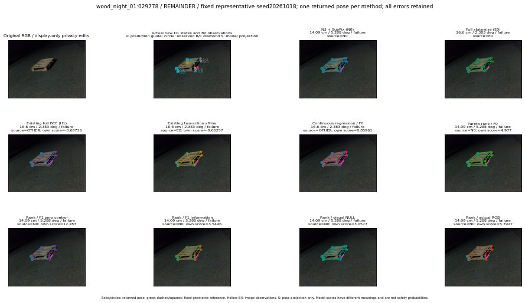

실선은 반환 자세, 초록 점선은 고정 기하 참조입니다. S는 영상 관측이 아닙니다. 점수는 모델별 의미가 다르며 보정된 안전 확률이 아닙니다. 개인정보 처리는 표시 사본에만 적용했습니다.
| 방법·seed | 위치 / 회전 / 공동성공 | 실제 출처 | 선택 후보 | 각 모델 자체 점수 |
|---|---|---|---|---|
| N0 | 14.09 cm / 5.288 deg / failure | N0 | N/A | N/A |
| E0 | 16.6 cm / 2.383 deg / failure | E0 | N/A | N/A |
| E0_REGENERATED | 16.6 cm / 2.383 deg / failure | E0 | E0_REGENERATED | N/A |
| POSEFIX_SUBPIX_PF_ANCHOR | 10.1 cm / 4.186 deg / failure | OTHER | N/A | N/A |
| POSEFIX_SUBPIX_YOLO_ANCHOR | 10.2 cm / 4.214 deg / failure | OTHER | N/A | N/A |
| D1_H1_MLP_s20261018 | 16.6 cm / 2.383 deg / failure | OTHER | G13/ORIGINAL_WD/endpoint/21 | -0.687362790107727 |
| D1_H1_MLP_s20261019 | 16.6 cm / 2.383 deg / failure | OTHER | G13/ORIGINAL_WD/endpoint/21 | -0.6775064468383789 |
| D1_H1_MLP_s20261020 | 16.6 cm / 2.383 deg / failure | OTHER | G13/ORIGINAL_WD/endpoint/21 | -1.1804343461990356 |
| D1_H1_PAIR_MLP_s20261018 | 16.6 cm / 2.383 deg / failure | E0 | E0_REGENERATED | -1.3005496263504028 |
| D1_H1_PAIR_MLP_s20261019 | 14.09 cm / 5.288 deg / failure | N0 | N0 | -1.3995068073272705 |
| D1_H1_PAIR_MLP_s20261020 | 16.6 cm / 2.383 deg / failure | E0 | E0_REGENERATED | -1.5620229244232178 |
| D1_H1_PAIR_ROLE_AFFINE_s20261018 | 16.6 cm / 2.383 deg / failure | E0 | E0_REGENERATED | -0.6625667214393616 |
| D1_H1_PAIR_ROLE_AFFINE_s20261019 | 14.09 cm / 5.288 deg / failure | N0 | N0 | -0.8544402122497559 |
| D1_H1_PAIR_ROLE_AFFINE_s20261020 | 14.09 cm / 5.288 deg / failure | N0 | N0 | -0.6067573428153992 |
| R_CONT_F0_s20261018 | 16.6 cm / 2.383 deg / failure | OTHER | G13/ORIGINAL_WD/endpoint/21 | 0.8596110343933105 |
| R_CONT_F0_s20261019 | 16.6 cm / 2.383 deg / failure | OTHER | G13/ORIGINAL_WD/endpoint/21 | 0.8393868207931519 |
| R_CONT_F0_s20261020 | 16.6 cm / 2.383 deg / failure | OTHER | G13/ORIGINAL_WD/endpoint/21 | 0.8852896094322205 |
| R_ORDER_F0_s20261018 | 14.09 cm / 5.288 deg / failure | N0 | N0 | 4.976969242095947 |
| R_ORDER_F0_s20261019 | 16.6 cm / 2.383 deg / failure | OTHER | G13/ORIGINAL_WD/endpoint/21 | 0.5048542022705078 |
| R_ORDER_F0_s20261020 | 14.09 cm / 5.288 deg / failure | N0 | N0 | -3.3358583450317383 |
| R_ORDER_F1_ZERO_s20261018 | 14.09 cm / 5.288 deg / failure | N0 | N0 | 12.283002853393555 |
| R_ORDER_F1_ZERO_s20261019 | 16.6 cm / 2.383 deg / failure | OTHER | G13/ORIGINAL_WD/endpoint/21 | 0.9430665969848633 |
| R_ORDER_F1_ZERO_s20261020 | 16.6 cm / 2.383 deg / failure | OTHER | G13/ORIGINAL_WD/endpoint/21 | 4.853842258453369 |
| R_ORDER_F1_s20261018 | 14.09 cm / 5.288 deg / failure | N0 | N0 | 3.5495893955230713 |
| R_ORDER_F1_s20261019 | 14.09 cm / 5.288 deg / failure | N0 | N0 | 6.350760459899902 |
| R_ORDER_F1_s20261020 | 14.09 cm / 5.288 deg / failure | N0 | N0 | 3.163027048110962 |
| V_ORDER_NULL_s20261018 | 14.09 cm / 5.288 deg / failure | N0 | N0 | 3.0577046871185303 |
| V_ORDER_NULL_s20261019 | 14.09 cm / 5.288 deg / failure | N0 | N0 | 2.1550257205963135 |
| V_ORDER_NULL_s20261020 | 14.09 cm / 5.288 deg / failure | N0 | N0 | 3.8344192504882812 |
| V_ORDER_RGB_s20261018 | 14.09 cm / 5.288 deg / failure | N0 | N0 | 5.792673110961914 |
| V_ORDER_RGB_s20261019 | 14.09 cm / 5.288 deg / failure | N0 | N0 | 1.740104079246521 |
| V_ORDER_RGB_s20261020 | 14.09 cm / 5.288 deg / failure | N0 | N0 | -5.520025730133057 |